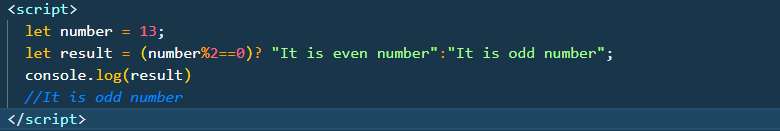

The ternary operator, also known as the conditional operator, is a concise way to write conditional expressions in JavaScript. It has the following syntax:
condition ? expressionIfTrue : expressionIfFalse
Now, let's write a program to check whether a number is even or odd using the ternary operator:
